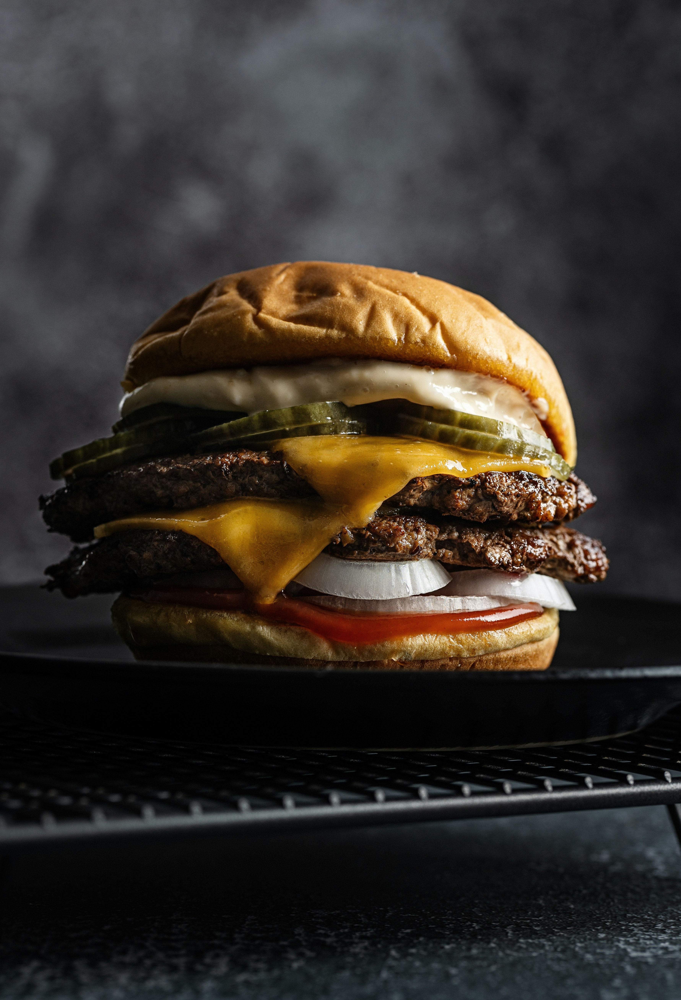

Burger

A smash burger is a thin, crispy beef burger made by pressing a ball of
ground beef onto a hot pan or griddle. Smashing creates a caramelized
crust, giving the burger a rich, beefy flavor with crispy edges.
Ingredients
- Ground beef (80/20 works best)
- Burger buns
- Cheese slices (American or cheddar)
- Salt
- Black pepper
- Oil or butter
Steps
- Heat a pan or griddle on high heat.
- Divide ground beef into small balls.
- Place a beef ball on the hot pan.
- Smash it flat using a spatula.
- Season with salt and pepper.
- Cook until crispy on the bottom.
- Flip and add cheese on top.
- Toast the buns lightly.
- Assemble the burger and serve hot.
Home